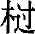
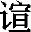

（zhuā）：马杖，又说骨朵状的兵器。
（zhuā）：马杖，又说骨朵状的兵器。真如不变之体，依之而有染净差别。随染缘起则有二种颠倒十二类众生，随净缘起则历成修证解脱次第。本卷先立三种渐次，再历五十七位修断，共成六十位菩萨行修证阶位。三种渐次为：一修习，除去助因，五辛为助恶之因，必先除去；二真修，刳其正性，杀盗淫妄是性业之罪，必要刳而空之，故要严持清净戒律；三增进，违其现业，即心不外驰，返流照性。五十七位为：干慧地、十信、十住、十行、十回向、四加行、十地、等觉、妙觉。关于菩提道修证位次的名目及顺序，诸经说法略有差别。本经所列菩萨行修证阶位较通常所说更为细致，十信位前的“三渐次”及“干慧地”，以及地前的“四加行”，此为本经所特有，而五十七位的名称义解，本经多从禅观境界讲说，故与别经颇有不同。
随后，文殊菩萨请问经题，佛宣说了本经的五个经题名称。至此，按照古德科判，本经正讲修行妙定义理已经完备；经中后面部分则是“助道别讲护定要法”，包括“谈七趣报”和“辨五阴魔”两部分内容。
因阿难问，佛陀详细叙述了“七趣”的生因及其生存相状。通常佛教言“六趣”，即地狱、饿鬼、畜生、人、天、阿修罗，本经又加“仙趣”而成“七趣”，涵盖了欲界、色界、无色界三界共二十五类有情众生。七趣因果，乃由不识妙明真心而随妄想情想以受生，随杀盗淫三恶业则成三恶道，修十善业则成四善道，七趣轮转，随业受报，不出因果轮回理论。经中详细叙述了十种习气因（淫、贪、慢、嗔、诈、诳、怨、见、枉、讼），六交报（见报、闻报、嗅报、味报、触报、思报），六识造业，所招恶报从六根出。又讲述了鬼趣、畜生趣、人趣、仙趣每一趣各有十种因习果报，最后则是天趣之业报差别。
“阿难，如是众生，一一类中亦各各具十二颠倒。犹如捏目，乱花发生；颠倒妙圆真净明心，具足如斯虚妄乱想。汝今修证佛三摩提，于是本因元所乱想，立三渐次，方得除灭。如净器中除去毒蜜，以诸汤水并杂灰香洗涤其器，后贮甘露。
译文：
“阿难，如此十二类众生，每一类中又各具有十二种颠倒。犹如以手捏目，眼见虚空乱花狂飞；因颠倒迷失妙圆真净明心，也会具有这样的虚妄乱想。你现在修证佛法三摩地，应从这颠倒产生之根本因、虚妄乱想之发生处，建立修行的三种渐进，方得除灭这样的颠倒乱想。就如于本来清净的容器中除去所放置的毒蜜，要以滚沸的汤水加香灰洗涤此器之后，然后贮存甘露。
“云何名为三种渐次？一者修习，除其助因；二者真修，刳其正性；三者增进，违其现业。
译文：
“什么是三种渐次呢？第一，修习位，除其障定之助因；第二，决定真修，刳空其正性罪之业；第三，增进圣位，违离其根尘偶对、流逸奔趣之现业。
“云何助因？阿难，如是世界十二类生不能自全，依四食住。所谓段食、触食、思食、识食 (1) 。是故佛说一切众生皆依食住。阿难，一切众生食甘故生，食毒故死。是诸众生求三摩地，当断世间五种辛菜 (2) 。是五种辛，熟食发淫，生啖增恚。如是世界食辛之人，纵能宣说十二部经，十方天仙嫌其臭秽，咸皆远离；诸饿鬼等因彼食次，舐其唇吻，常与鬼住，福德日销，长无利益。是食辛人修三摩地，菩萨、天仙、十方善神不来守护。大力魔王得其方便，现作佛身来为说法，非毁禁戒，赞淫、怒、痴；命终自为魔王眷属，受魔福尽，堕无间狱。阿难，修菩提者永断五辛，是则名为第一增进修行渐次。
注释：
(1) 段食：又作“抟食”、“揣食”，指用口鼻分段饮啖，以滋养有情之身，故称“段食”。触食：指感觉对所取之境产生喜乐等觉受，而摄益心、心所，由之长养诸根大种，故称之为食。思食：又作“念食”、“意食”、“意思食”、“意念食”、“业食”，指意业或意念。即此有漏的意业与欲望俱转，而生希望之念，能招引当有之果，使有情滋长相续。识食：指六识。六识由段、触、思三食之势力而能起当有之果，执持身命而不坏，故称为食。
(2) 五种辛菜：即葱、蒜、韭、薤（xiè）、兴渠（中土无）五种辛菜。
译文：
“什么叫助因呢？阿难，这个世界的十二类众生都不能自身保全形命，而依靠四食得以住世存在。所谓四食是：段食、触食、思食、识食。所以佛说一切众生都依食而住在。阿难，一切众生食用甘美的食物而生存，食用有毒的东西就死亡。因此，这些众生求证三摩地，应当断绝食用世间五种辛菜。这五种辛菜，熟食会助发淫欲，生吃会增加嗔恚。这个世间食辛的人，即使能宣说十二部经，十方天仙嫌其臭秽也都远离他；那些饿鬼则在其人食用辛菜后，暗中来舐其嘴唇，因而他常与鬼同住，福德日日消减，增长无利益之事。这食辛之人欲修三摩地，菩萨、天仙及十方善神不会来守护他。而大力魔王就乘此机会化作佛身来为其说法，毁谤严持禁戒是小乘道，赞叹淫、怒、痴等是染净不二的大乘法；命终之后，自然成为魔王的眷属，魔福享尽之后，堕无间地狱。阿难，修证菩提者应当永断五辛，这就是第一增进修行渐次。
“云何正性？阿难，如是众生入三摩地，要先严持清净戒律，永断淫心，不餐酒肉 (1) ，以火净食，无啖生气。阿难，是修行人若不断淫及与杀生，出三界者，无有是处。当观淫欲犹如毒蛇，如见怨贼。先持声闻四弃、八弃，执身不动；后行菩萨清净律仪，执心不起。禁戒成就，则于世间永无相生相杀之业；偷劫不行，无相负累，亦于世间不还宿债。是清净人修三摩地，父母肉身，不须天眼，自然观见十方世界，睹佛闻法，亲奉圣旨，得大神通，游十方界，宿命清净，得无艰险。是则名为第二增进修行渐次。
注释：
(1) 餐：有版本作“飡”、“飧”，皆同“餐”。
译文：
“什么叫正性呢？阿难，这些众生欲证入三摩地，要先严持清净戒律，永断淫心，不食酒肉，以火蒸煮过的熟食方为净食，不吃生气之属的生菜等。阿难，这些修行人如果不断除淫心和杀生，想出离三界是不可能的。应当视淫欲如同毒蛇，也如同见了怨贼一样。因此，修行人应当首先严持声闻戒律的比丘四弃、比丘尼八弃等，执持身口不动不犯；进而行持菩萨清净律仪，执持其心令恶念不起。禁戒成就，则于世间永远不会再有因淫欲而相生、因嗔恚而相杀的业行；偷盗、劫夺之业不作，没有互相负欠的负累，在这世间也就不用偿还宿债了。这个持戒清净之人若进而修行三摩地，便能发相似五通，仅以父母所生的肉身，不须借助天眼，自然可以观见十方世界，亲睹十方诸佛，亲耳闻听佛说法，亲奉如来旨意，得到大神通，游历十方世界，宿命清净，不得再堕入三恶道艰险之处。这就是第二增进修行渐次。
“云何现业？阿难，如是清净持禁戒人，心无贪淫，于外六尘不多流逸。因不流逸，旋元自归；尘既不缘，根无所偶，反流全一，六用不行。十方国土皎然清净，譬如琉璃，内悬明月，身心快然，妙圆平等，获大安隐；一切如来密、圆、净、妙皆现其中；是人即获无生法忍。从是渐修，随所发行，安立圣位。是则名为第三增进修行渐次。
译文：
“什么叫现业呢？阿难，如上清净严持禁戒的人，心中没有贪淫之念，对于外六尘也不多随境奔流纵逸。因为不流逸外尘，即可返观自性，旋复本元，自归元明；既然不与外六尘相缘，内六根就没有所缘对象与其相对，六根反流照性，全归一闻性，六根的各自作用不复现行，达到入一亡六之境。这时，修行者得见十方国土皎然清净，就像琉璃中内悬明月一样，身心快然，妙应圆通，平等无碍，获得大安稳；一切如来的秘密、圆满、清净、微妙的境界都呈现其中；此人即时获证了无生法忍。由此证悟之境渐进修行，随其所发起的行持，安立相应的修行圣位。这就是第三增进修行渐次。
“阿难，是善男子欲爱干枯，根境不偶 (1) ，现前残质不复续生；执心虚明，纯是智慧，慧性明圆，莹十方界，干有其慧，名干慧地。欲习初干，未与如来法流水接。
注释：
(1) 偶：相合。
译文：
“阿难，此善男子欲爱的习气已经干枯，内根与外尘不相对待，现前的最后身永不再相续受生；其人持心虚明，纯是智慧，慧性明圆，光照十方世界，此但观慧圆明，因而名为干慧地。欲爱的习气刚刚干枯，但俱生无明仍未完全断除，还未能与如来的法性智流水相接。
“即以此心，中中流入，圆妙开敷，从真妙圆，重发真妙，妙信常住，一切妄想灭尽无余，中道纯真，名信心住。
译文：
“即以此干慧之心，以中道妙智观中道妙理，流入本元心地，圆明妙性开敷，从真妙圆明之境，重发更进一层次的真妙圆明。这样因亲证真妙圆明之心而妙信生发，常住不退，一切我执、法执、空执之妄想灭尽无余，中道纯真之理彰显，名为信心住。
“真信明了，一切圆通，阴、处、界三，不能为碍。如是乃至过去、未来无数劫中，舍身、受身，一切习气皆现在前，是善男子皆能忆念，得无遗忘，名念心住。
译文：
“真信得证，智慧明了，一切圆通无碍，阴、处、界三者都不能成为障碍。这样，乃至过去、未来无数劫中，轮回中舍身、受身的一切习气因由都显现在前，这个善男子都能忆念，永不遗忘，名为念心住。
“妙圆纯真，真精发化，无始习气通一精明，唯以精明进趣真净，名精进心。
译文：
“已得妙圆纯真之真信，真实觉性发起镕化妄习之大用，故将无始以来的习气都销镕为一精明智体，进而以此精明之如如智体去契合真净之如如理体，名为精进心。
“心精现前，纯以智慧，名慧心住。
译文：
“因为契入真净理体，本心真觉得以现前，纯以智慧用事，名为慧心住。
“执持智明，周遍寂湛，寂妙常凝，名定心住。
译文：
“慧既纯明，以定执持，智体凝明，身心内外周遍明湛，寂而常照，照而常寂，寂妙常凝，名为定心住。
“定光发明，明性深入，唯进无退，名不退心。
译文：
“定力既深，慧光发明，慧性明而定力愈深，定慧等持，唯进无退，名为不退心住。
“心进安然，保持不失，十方如来气分交接，名护法心。
译文：
“由于定慧均等，觉心安然，保持不失，任运前进，不假用力，能与十方如来法身之气分相交相接，内护心法，外护佛法，名为护法心住。
“觉明保持，能以妙力回佛慈光，向佛安住，犹如双镜光明相对，其中妙影重重相入，名回向心。
译文：
“觉慧定明保持不失，所以能以慧光妙力回转诸佛慈光，回向自己心佛光中安住，他佛、心佛，心光、佛光，互相回向，犹如两镜相对，其光相互映照，其中妙影，相摄相入，重重无尽，名为回向心住。
“心光密回，获佛常凝无上妙净，安住无为，得无遗失，名戒心住。
译文：
“心光绵密回照，获得佛之常凝无上妙净戒体之力，安住于无作无为之境，得无一念遗失，而不落于有为，名为戒心住。
“住戒自在，能游十方，所去随愿，名愿心住。
译文：
“安住妙净戒体，自在成就，能游化十方世界，所去随愿，名为愿心住。
“阿难，是善男子以真方便发此十心，心精发辉 (1) ，十用涉入，圆成一心，名发心住。
注释：
(1) 辉：有版本作“晖”。
译文：
“阿难，修满十信位的善男子，以真实方便法门发起信位十心，心精觉明发挥，十心妙用互相涉入，十心圆成一心，名为发心住。
“心中发明，如净琉璃内现精金，以前妙心，履以成地，名治地住。
译文：
“依此圆成一心发明妙智，就如净琉璃内现出精金，清净洁明；以前十用涉入之妙心，履治为地，智契于理，令理精明，出生无量德用，名为治地住。
“心地涉知，俱得明了，游履十方，得无留碍，名修行住。
译文：
“由内外精莹，治成心地，智照于境，境亦照智，所涉所知，俱得明了，境智互照，妙行普周，故能游化十方世界，普遍修行，皆无留难障碍，名为修行住。
“行与佛同，受佛气分，如中阴身自求父母，阴信冥通，入如来种，名生贵住。
译文：
“所修妙行与佛相同，领受佛之真如气分，就好像中阴身寻找具有同业的父母投胎一样；既然与佛行业相同，智行微妙，冥通果德，阴信暗通，自然入于如来种姓，名为生贵住。
“既游道胎，亲奉觉胤 (1) ，如胎已成，人相不缺，名方便具足住。
注释：
(1) 胤（yìn）：嫡嗣，指得佛权实二智的亲传。
译文：
“既然入于佛法正道之胎藏，亲揽佛权实二智，则为大觉法王的真嗣，犹如胎已育成，人相不缺，名为方便具足住。
“容貌如佛，心相亦同，名正心住。
译文：
“权智外现，方便具足，容貌与佛相同；以权资实，内照真如，心相也与佛相同，成就正知见，名为正心住。
“身心合成，日益增长，名不退住。
译文：
“外之容貌，内之心相，权实不二，身心合成，道胎日益增长，名为不退住。
“十身灵相，一时具足，名童真住。
译文：
“佛之十身灵相，一时全部具足，名为童真住。
“形成出胎，亲为佛子，名法王子住。
译文：
“身形长成，出胎现世，亲为佛子，名为法王子住。
“表以成人，如国大王以诸国事分委太子，彼刹利王世子长成，陈列灌顶，名灌顶住。
译文：
“德相渐成，表以成人，如同世间的国王分出一些国事委任太子负责，那些刹帝利王世子长大成人以后，举行灌顶仪式，以受王职位，名为灌顶住。
“阿难，是善男子成佛子已，具足无量如来妙德，十方随顺，名欢喜行。善能利益一切众生，名饶益行。自觉、觉他，得无违拒，名无嗔恨行。种类出生，穷未来际，三世平等，十方通达，名无尽行。一切合同，种种法门，得无差误，名离痴乱行。则于同中显现群异，一一异相，各各见同，名善现行。如是乃至十方虚空满足微尘，一一尘中现十方界，现尘、现界不相留碍，名无著行。种种现前，咸是第一波罗蜜多，名尊重行。如是圆融，能成十方诸佛轨则，名善法行。一一皆是，清净无漏，一真无为，性本然故，名真实行。
译文：
“阿难，此善男子既然已经成为佛子，就具足无量如来的妙德，于十方世界随顺众生而利益教化，令众生悉皆欢喜，名为欢喜行。善能以戒德善法感化而利益一切众生，名为饶益行。自己觉悟，并使一切众生觉悟，常行忍辱而于顺逆因缘皆能忍受而不违拒，名为无嗔恨行。在十二类众生中随类受生，以行教化，过去、现在乃至尽未来际，三世平等普入，十方通达无碍，菩萨行愿，精进无尽，名为无尽行。以定心持一切法，悉皆会合，同为一体，以种种法门随类说法，得无差误，名为离痴乱行。进而于同一法性理体中，显现各种不同的差别事相；于一一差别事相上，各见全理，理事无碍，随应互显，名为善现行。这样乃至十方世界所有虚空都普遍显现微尘，一一微尘中都显现十方世界，显现微尘与显现世界不相妨碍，小大自在，不着事理，名为无着行。种种现同现异现尘现界等妙行现前，都是第一波罗蜜多般若观照之力，最为尊重，名为尊重行。如此圆融无碍之智慧妙行，一一皆能成立十方诸佛的利生轨则，善巧说法，随成模范法则，名为善法行。如此所有诸妙行，一一都是清净无漏、一真无为的真如体性的本然妙用，全修即性，名为真实行。
“阿难，是善男子，满足神通，成佛事已，纯洁精真，远诸留患。当度众生，灭除度相，回无为心向涅槃路，名救护一切众生离众生相回向 (1) 。坏其可坏，远离诸离，名不坏回向。本觉湛然，觉齐佛觉，名等一切佛回向。精真发明，地如佛地，名至一切处回向。世界、如来互相涉入，得无罣碍，名无尽功德藏回向。于同佛地，地中各各生清净因，依因发挥取涅槃道，名随顺平等善根回向。真根既成，十方众生皆我本性，性圆成就，不失众生，名随顺等观一切众生回向。即一切法，离一切相，唯即与离二无所著，名真如相回向。真得所如，十方无碍，名无缚解脱回向。性德圆成，法界量灭，名法界无量回向。
注释：
(1) 回向：指以自己所修之善根功德，回转给众生，并使自己趋入菩提涅槃。
译文：
“阿难，此修满十行的善男子，圆满具足神通，成就诸佛利生事业轨则，达于纯洁精真的清净无为真如体性，远离了一切着有滞空的过患。愿当救度众生而灭除能度所度之相，回一真无为心向无上涅槃之路，如此救护一切众生，永无休息，名为救护一切众生离众生相回向。坏灭其可坏灭之相，而不见有所坏之境；远离一切能离与所离，能离之相也离，而不见有能离之智，善获中道，名为不坏回向。本觉湛然明现，其觉智等同于佛之妙觉，名为等一切佛回向。因地心之始觉精真发明，本觉理地如同佛地，能含藏无边境界，能现无量国土，名为至一切处回向。此菩萨得世界身与如来身，互相涉入，无有罣碍，功德无尽，名为无尽功德藏回向。在同于佛地的本觉理体之中，各生起清净真因，依此真因发挥六度万行，以取得究竟涅槃，名为随顺平等善根回向。真根既已成就，则知十方众生皆我本性所具，我的本性圆满成就，也当使众生同样成就，而不遗失任一众生，名为随顺等观一切众生回向。即一切法而离一切相，并连‘即’和‘离’的念头都不存在，空、有不着，二边双亡，名为真如相回向。真实证得真如实际理地，体遍十方，一切无碍，名为无缚解脱回向。本有自性妙德圆成，体用周遍，法界的边际和数量的观念也已灭除了，名为法界无量回向。
“阿难，是善男子尽是清净四十一心，次成四种妙圆加行 (1) 。即以佛觉用为己心，若出未出，犹如钻火，欲然其木，名为暖地。又以己心成佛所履，若依非依，如登高山，身入虚空，下有微碍，名为顶地。心佛二同，善得中道，如忍事人，非怀非出，名为忍地。数量销灭，迷觉中道，二无所目，名世第一地。
注释：
(1) 加行：即加功用行的意思，乃针对正行的预备行。
译文：
“阿难，此善男子圆满成就了四十一清净妙心，其次还要成就四种妙圆加行。即以如佛之本觉当作自己加行的因心，本觉智火欲出而未出，加行至此，犹如钻木取火，火虽未燃，暖相已现，将要燃烧其木，名为暖地。又以自己加行的因心成为佛觉的所履之地，此时，心相未能全尽，尚有微细执碍，似乎完全依循本觉，又似未完全依循本觉，就如登上高山峰顶，身体已入虚空，脚下还着地，还有微小障碍，名为顶地。心、佛相同，善得中道妙义，心中自知却倾吐不出，如同忍事之人，非欲怀之于心，又非能出之于口，名为忍地。不见自心，不见佛智，一切境界、数量完全消灭，迷觉与中道二者的对待也没有了，高超世表，名为世第一地。
“阿难，是善男子于大菩提善得通达，觉通如来，尽佛境界，名欢喜地。异性入同，同性亦灭，名离垢地。净极明生，名发光地。明极觉满，名焰慧地。一切同异所不能至，名难胜地。无为真如，性净明露，名现前地。尽真如际，名远行地。一真如心，名不动地。发真如用，名善慧地。阿难，是诸菩萨从此已往，修习毕功，功德圆满，亦目此地名修习位。慈阴妙云 (1) ，覆涅槃海，名法云地。
注释：
(1) 阴：通“荫”，对偶“云”。或云“覆盖”，引申义。
译文：
“阿难，此善男子对于无上大菩提善得通达，己心本觉贯通如来妙觉，悟入佛所行境界，得大欢喜，名为欢喜地。地前诸位，总名异生性，初地证真如，与佛同体，名同生性。异性灭除得入同性，然对异说同，同性亦是垢，同性异性诸垢一齐灭除，名为离垢地。清净至极，无边妙慧光明生发，名为发光地。明净至极，慧觉圆满，名为焰慧地。地前智名异，地上智名同，理极圆融，无复同异之可见，非同非异，一切世、出世间智皆不能及，更无胜者，名为难胜地。有为功用至极，无为真如，性本清净，照明显露，名为现前地。极尽真如自体边际，名为远行地。纯一真如，湛寂一心，名为不动地。发起真如的无碍妙用，名为善慧地。阿难，这些菩萨从此以后，修行之功已完毕，出世功德已圆满，因而也称此地为修习位。慈悲之云普荫众生，妙智之云覆盖涅槃果海，此名为法云地。
“如来逆流，如是菩萨顺行而至，觉际入交，名为等觉。阿难，从干慧心至等觉已，是觉始获金刚心中初干慧地。如是重重，单复十二，方尽妙觉，成无上道。是种种地，皆以金刚观察如幻十种深喻 (1) ，奢摩他中 (2) ，用诸如来毗婆舍那清净修证 (3) ，渐次深入。阿难，如是皆以三增进故，善能成就五十五位真菩提路。作是观者，名为正观；若他观者，名为邪观。”
注释：
(1) 十种深喻：即指如幻、阳炎、梦、影、乾闼婆城、响、水月、浮泡、虚空华、旋火轮等十喻。
(2) 奢摩他：译为“止”，指对法义的专注思维，连续不断，身起轻安乃至心起轻安。
(3) 毗婆舍那：译为“观”，是指在止即奢摩他基础上，对由止所缘的法义影像进行观察、思维、抉择等深层的意识活动。
译文：
“如来因圆果满，证得涅槃而不舍众生，倒驾慈航，逆涅槃流而出，而菩萨从初发心，入于金刚干慧地，经过五十四位至十地菩萨，顺法性流顺行而至于无上菩提，佛与十地菩萨于‘觉际’互相涉入相交，所证等同于佛之正觉，名为等觉。阿难，从初信位前的干慧心，至等觉位，此时觉境才获得金刚心中的初干慧地。这样，从初干慧地金刚初心到妙觉位，经过重重阶位，其中单数位有七个，复数位有五个，共十二位，方得究竟妙觉果位，成就无上佛道。这种种菩提道阶位，菩萨都要以金刚三昧力去观察一切法如幻的十种甚深比喻，于奢摩他禅定修持之中，依诸佛所教授的毗婆舍那慧观而清净修证，渐次深入。阿难，这样的修证次第，皆以三种增进修行渐次而为初因方便，善能成就五十五阶位的真菩提路。依照如此观行，名为正观；若依其他观法，名为邪观。”
尔时，文殊师利法王子在大众中，即从座起，顶礼佛足而白佛言：“当何名是经？我及众生云何奉持？”佛告文殊师利：“是经名《大佛顶悉怛多般怛啰无上宝印十方如来清净海眼》，亦名《救护亲因度脱阿难及此会中性比丘尼得菩提心入遍知海》，亦名《如来密因修证了义》，亦名《大方广妙莲华王十方佛母陀罗尼咒》，亦名《灌顶章句诸菩萨万行首楞严》。汝当奉持。”
译文：
这时，文殊师利法王子在大众中，即从座而起，顶礼佛足而对佛说：“应当如何命名此经？我及众生如何奉持？”佛告诉文殊师利菩萨：“此经名为《大佛顶、悉怛多般怛啰、无上宝印，十方如来清净海眼》，也名为《救护亲因、度脱阿难及此会中性比丘尼，得菩提心，入遍知海》，也名为《如来密因、修证了义》，也名为《大方广妙莲花王、十方佛母陀罗尼咒》，也名为《灌顶章句，诸菩萨万行，首楞严》。你应当如此奉持。”
说是语已，即时阿难及诸大众，得蒙如来开示密印、般怛啰义，兼闻此经了义名目，顿悟禅那，修进圣位，增上妙理，心虑虚凝，断除三界修心六品微细烦恼 (1) 。
注释：
(1) 六品微细烦恼：即六品思惑。因思惑微细，非凡夫所能见，所以称为“微细烦恼”。
译文：
佛宣说这些教言后，这时阿难及会中诸大众，得蒙如来开示秘密心印、悉怛多般怛啰神咒等深义，并且听闻了此经的了义经题，顿悟禅那之法，修证上增进圣道位次，开解增上了玄妙之理，心念达于虚明凝定之境，断除了三界中欲界的前六品思惑微细烦恼而证得了斯陀含果位。
即从座起，顶礼佛足，合掌恭敬而白佛言：“大威德世尊，慈音无遮，善开众生微细沉惑，令我今日身心快然，得大饶益。世尊，若此妙明真净妙心，本来遍圆，如是乃至大地、草木、蠕动含灵，本元真如，即是如来成佛真体；佛体真实，云何复有地狱、饿鬼、畜生、修罗、人、天等道？世尊，此道为复本来自有？为是众生妄习生起？世尊，如宝莲香比丘尼，持菩萨戒，私行淫欲，妄言‘行淫非杀非偷，无有业报’。发是语已，先于女根生大猛火，后于节节猛火烧燃，堕无间狱 (1) 。琉璃大王、善星比丘 (2) ，琉璃为诛瞿昙族姓 (3) ，善星妄说一切法空，生身陷入阿鼻地狱。此诸地狱，为有定处？为复自然，彼彼发业，各各私受？惟垂大慈，发开童蒙，令诸一切持戒众生闻决定义，欢喜顶戴，谨洁无犯。”
注释：
(1) 无间狱：即无间地狱，为八热地狱之第八。
(2) 琉璃大王：灭亡迦毗罗卫国释种的恶王名。善星比丘：佛的堂弟之子，随佛出家，曾为佛侍者，获证四禅，后亲近恶友，退失道行而生恶邪见。
(3) 瞿昙：印度刹帝利种，是释迦牟尼佛所属的本姓。
译文：
阿难此时即从座而起，顶礼佛足，合掌恭敬而对佛说：“大威德世尊，您的慈音广宣，不分亲疏，善巧开解众生无始以来的微细、沉隐之思惑及无始无明，使我们身心喜悦快然，得到大利益。世尊，如果此妙明真净妙心，本来圆满周遍，这样乃至山河大地草木，一切蠕动含灵有情众生，本元皆是真如，也即是如来成佛之真体；佛体既然真实净妙，为何又有地狱、饿鬼、畜生、修罗、人、天等道呢？世尊，此六道是真如体中本来自有的呢？还是众生心中的虚妄习气生起的呢？世尊，如宝莲香比丘尼，受持菩萨大戒，却与人偷偷行淫，并且妄说‘行淫不是杀生，也不是偷盗，没有业报’。她说完这话，首先即于女根生起大猛火，随后全身骨节大火燃烧，堕入至无间地狱。又如琉璃大王和善星比丘，琉璃王兴兵诛灭释迦族姓，善星比丘妄说‘一切法空’，堕断灭空，二人以此恶见邪见因缘而生身堕入阿鼻地狱。这些地狱是有一确定处所呢？还是自然如此，由各自所造的业，各自去受报呢？唯愿世尊垂示大慈，开导我等童蒙无知之人，使一切持戒众生能听闻到这些决定义理，欢喜顶戴，谨慎持守，洁身不犯。”
佛告阿难：“快哉此问！令诸众生不入邪见。汝今谛听，当为汝说。阿难，一切众生实本真净，因彼妄见，有妄习生，因此分开内分、外分。阿难，内分即是众生分内，因诸爱染，发起妄情，情积不休，能生爱水。是故众生心忆珍羞 (1) ，口中水出；心忆前人，或怜或恨，目中泪盈；贪求财宝，心发爱涎 (2) ，举体光润；心著行淫，男女二根自然流液。阿难，诸爱虽别，流结是同，润湿不升，自然从坠，此名内分。阿难，外分即是众生分外，因诸渴仰，发明虚想，想积不休，能生胜气。是故众生心持禁戒，举身轻清；心持咒印，顾盼雄毅；心欲生天，梦想飞举；心存佛国，圣境冥现；事善知识，自轻身命。阿难，诸想虽别，轻举是同，飞动不沉，自然超越，此名外分。
注释：
(1) 珍羞：指美味。
(2) 涎（xián）：贪羡，贪图。
译文：
佛告诉阿难：“你此问真是快利啊！能够使一切众生不入邪见。你们现在仔细听，我当为你们解说。阿难，一切众生确实是本来真实清净，只因一念无明妄动而成妄见，因妄见而有妄业习气，因此分开为内分和外分。阿难，内分就是众生身分之内，因六根觉受执着而有种种爱染，因为种种爱染而发起妄情，妄情积聚不休而能产生身内的爱水。所以，众生心里忆想珍馐妙味，就会流出口水；心中忆念已故之人，或怜爱或恨恼，眼中就会热泪盈眶；贪求财宝，心中发生爱涎，甚至全身也变得更光润；心里贪着行淫，男女二根就会自然流出液体。阿难，种种爱染虽有差别，但流泄液体和业习缚结则是相同，因润湿之性不能上升，自然就下坠，这称为内分。阿难，外分就是众生身分之外，因为对外境的种种渴望仰慕而发起清虚妄想念，想念积聚不休而能产生浮胜之气。所以，众生心中严持禁戒，全身就会轻快清净；心中持念诸佛咒印，顾盼之间自然流露出雄毅气概，无所畏惧；心中欲想生于诸天，梦里就会觉得自己在飞升远举；心里存念佛国，圣境就会暗中显现；心中若想奉事善知识，就会不惜身命。阿难，种种想念虽有不同，但轻举则是相同，因飞动性不会下沉，自然就超越，这称为外分。
“阿难，一切世间生死相续，生从顺习，死从变流。临命终时，未舍暖触，一生善恶俱时顿现，死逆生顺，二习相交。纯想即飞，必生天上。若飞心中，兼福兼慧及与净愿，自然心开，见十方佛，一切净土随愿往生。情少想多，轻举非远，即为飞仙、大力鬼王、飞行夜叉、地行罗刹，游于四天，所去无碍。其中，若有善愿善心，护持我法，或护禁戒，随持戒人，或护神咒，随持咒者，或护禅定，保绥法忍 (1) ，是等亲住如来座下。情想均等，不飞不坠，生于人间，想明斯聪，情幽斯钝。情多想少，流入横生，重为毛群，轻为羽族。七情三想，沉下水轮，生于火际，受气猛火，身为饿鬼，常被焚烧。水能害己，无食无饮，经百千劫。九情一想，下洞火轮，身入风火二交过地，轻生有间、重生无间二种地狱。纯情即沉，入阿鼻狱。若沉心中，有谤大乘，毁佛禁戒，诳妄说法，虚贪信施，滥膺恭敬 (2) ，五逆、十重 (3) ，更生十方阿鼻地狱。循造恶业，虽则自招，众同分中，兼有元地。
注释：
(1) 绥（suí）：安。
(2) 膺（yīnɡ）：承当，承受。
(3) 十重：即十重戒。
译文：
“阿难，一切有情世间的生死相续，生则随顺习气而造善恶等业，死则从其业力而变迁流转、受报为同类或异类之身。临命终时，第八识尚未离体而暖相尚存之际，一生所造善恶之业会一齐显现出来，以死乃逆其习气、生乃顺其习气，二种习气此时相交并发，故有种种变迁受报之相。此时心识若纯为观想而没有情执，神识即得飞升，必生于天上。如果纯想即飞的心中，还兼有平日修福、修慧以及发清净誓愿之善业，临命终时自然心地开通，得见十方佛，一切净土可以随愿往生。若是胜想不纯，掺杂微情，虽可轻举，但不会太远，即成为飞仙、大力鬼王、飞行夜叉、地行罗刹，游于四天王天下，来去无有阻碍。这其中，若有发善愿或存善心来护持佛法，或是护持禁戒，跟随保护持戒人；或是护持神咒，跟随保护持咒人；或是护持禅定，保安修习无生法忍的人，这些护法善神即得亲住于如来座下。情、想均等的，不飞升，也不下坠，而生于人间；想念清明的，受生为聪明的人；情意幽郁的，受生为愚钝的人。情多想少的，则流入横生的畜生道；情又较重的，受生为走兽毛群；情稍轻的，受生为飞禽羽族。七分情三分想的，就沉到水轮之下，生于火轮之际，受猛火气分以成身，身为饿鬼，常被焚烧。因为业力的缘故，见水却变成火，水反而能伤害自己，故无食无饮，经百千劫，常在饥饿之中。九分情一分想的，则向下洞穿透过火轮，身子坠入风轮火轮二者的交界处；情稍轻的，生于有间地狱；情较重的，生于无间地狱。纯情而无想的众生，命终即沉入阿鼻地狱。如果纯情者的心中又兼有毁谤大乘，或毁谤佛所制禁戒，或诳妄说法，或虚贪信众所施财物，或无实德而滥受他人恭敬，乃至犯了五逆、十重罪，都沉入阿鼻地狱，此方世界劫坏之后，转生他方世界阿鼻地狱，这样转生于十方阿鼻地狱，求出无期。这些都是循着自己所造的恶业而所招感的苦报，虽然是自业所招感，然而众生同业所招感的同分地狱中，仍兼有各自本元因地别业所成之地的差别。
“阿难，此等皆是彼诸众生自业所感，造十习因，受六交报。云何十因？
“阿难，一者，淫习交接，发于相磨，研磨不休，如是故有大猛火光于中发动。如人以手自相摩触，暖相现前。二习相然，故有铁床、铜柱诸事。是故十方一切如来，色目行淫，同名欲火；菩萨见欲，如避火坑。
译文：
“阿难，此等果报都是这些众生自业所招感，以所造的十种业习为因，而受六交之果报。什么是地狱果报的十因呢？
“阿难，第一种是淫欲习气，男女交接，发于互相摩擦以求欢乐，摩擦不休，这样就会有大猛火光于其心中发动。犹如有人以手自相摩触，自然就有暖热产生。宿生的淫习与现行的淫欲相互作用、相互燃烧，故临命终时有铁床、铜柱等地狱果报诸相。因此，十方一切如来观察称呼行淫，同名为欲火；菩萨见淫欲，如同躲避大火坑。
“二者，贪习交计，发于相吸，吸揽不止，如是故有积寒坚冰，于中冻冽。如人以口吸缩风气，有冷触生。二习相陵，故有吒吒、波波、罗罗、青、赤、白莲寒冰等事 (1) 。是故十方一切如来，色目多求，同名贪水；菩萨见贪，如避瘴海。
注释：
(1) 吒吒、波波、罗罗：都是寒冰地狱之名字。为拟声字，比喻这些地狱中寒逼罪人的苦声。吒吒，有版本作“咤咤”。青、赤、白莲：为这些地狱中的冻冽罪人的形色。
译文：
“第二种是贪婪习气，互相营计，发于互相吸取以济私欲，吸取收揽据为己有不止，这样就有积寒坚冰之境，于其心中预现冻冽之相。犹如有人以口吸缩风气，就有冷触感觉产生。宿生的贪习与现行的贪欲相互凌驾，故临命终时有咤咤、波波、罗罗、青、赤、白莲地狱等八处寒冰地狱果报诸相。因此，十方一切如来观察称呼贪婪多求，同名为贪水；菩萨见贪求，如同躲避瘴疠之海。
“三者，慢习交陵 (1) ，发于相恃，驰流不息，如是故有腾逸奔波，积波为水。如人口舌自相绵味，因而水发。二习相鼓，故有血河、灰河、热砂、毒海、融铜、灌吞诸事。是故十方一切如来，色目我慢，名饮痴水；菩萨见慢，如避巨溺。
注释：
(1) 陵：凌越。
译文：
“第三种是我慢习气，交相凌越，发于倚恃己势而凌慢他人，趾高气扬而其心驰流不息，这样就有腾逸奔波的情势，其心中就有积波成水之相。犹如有人以舌自绞上颚、连绵品味，自然会有口水产生。宿世的慢习与现行的傲慢相互鼓动，故临命终时有血河、灰河、热砂、毒海、融铜、灌口等地狱果报诸相。因此，十方一切如来观察称呼我慢，同名为饮痴水；菩萨见我慢，如同躲避巨海洪涛之溺。
“四者，嗔习交冲，发于相忤，忤结不息，心热发火，铸气为金，如是故有刀山、铁橛、剑树、剑轮、斧钺、枪锯 (1) ；如人衔冤，杀气飞动。二习相击，故有宫割、斩斫、剉刺、槌击诸事 (2) 。是故十方一切如来，色目嗔恚，名利刀剑；菩萨见嗔，如避诛戮。
注释：
(1) 铁橛（jué）：铁棍。
(2) 宫割：断男根。斩斫（zhuó）：指砍头。斫，用刀斧等砍。剉（cuò）：铡切，斩剁。槌（chuí）：捶打。
译文：
“第四种是嗔恚习气，互相冲突，发于忤逆侵犯，嗔恨郁结不息，心中热恼而发火，火铸肺气而成金相忿坚的情势，如此便于其心中预现刀山、铁橛、剑树、剑轮、斧钺、枪锯等杀相；犹如有人含怨莫解，面目便有腾腾杀气飞动。宿世的嗔习与现行的嗔恨相互冲击，故临命终时有宫刑阉割男女根、斩首、斫骨、剉折身体、刺胸、槌打杖击等地狱果报诸相。因此，十方一切如来观察称呼嗔恚，同名为利刀剑；菩萨见嗔恚，如同躲避诛戮。
“五者，诈习交诱，发于相调，引起不住，如是故有绳木绞校；如水浸田，草木生长。二习相延，故有杻械、枷锁、鞭杖、 棒诸事 (1) 。是故十方一切如来，色目奸伪，同名馋贼；菩萨见诈，如畏豺狼。
注释：
(1)
杻（chǒu）：手铐。械：枷杻、镣铐之类的刑具。枷（jiā）：加在犯人颈上的木制刑具。锁：铁链刑具。
（zhuā）：马杖，又说骨朵状的兵器。
译文：
“第五种是奸诈习气，互相谄诱，发于相互调弄引诱，伪诈引起而不肯休止，如此故心中预有绳绾、木枷、绞索、杻械等地狱初萌相；如同以水浸田，草木于不知不觉间就生长起来。宿世的诈习与现行的欺诈相互延引，故临命终时有杻械、枷锁、鞭杖、 棒等地狱果报诸相。因此，十方一切如来观察称呼奸伪，同名为谗贼；菩萨见奸诈，如同畏惧豺狼。
“六者，诳习交欺，发于相罔 (1) ，诬罔不止，飞心造奸，如是故有尘土、屎尿秽污不净；如尘随风，各无所见。二习相加，故有没溺、腾掷、飞坠、漂沦诸事，是故十方一切如来，色目欺诳，同名劫杀；菩萨见诳，如践蛇虺 (2) 。
注释：
(1) 罔（wǎnɡ）：蒙蔽，欺骗。以非道欺人謂之“罔”。
(2) 虺（huǐ）：一种毒蛇。
译文：
“第六种是欺诳习气，相互欺瞒诳伪，发于相互诬罔欺诳，指无为有，以虚为实，诬罔不休，心念飞驰，造作奸谋，使人堕入奸计；如此其心中便有尘土、屎尿秽污不净等地狱初萌之相；如同尘土随风飞扬，搅乱虚空，令人对面各无所见。宿世的诳习与现行的诬罔相互迭加，故临命终时就有没溺于沸屎地狱、腾掷于黑砂地狱、飞坠漂沦诸地狱等果报诸事，因此，十方一切如来观察称呼欺诳，同名为劫杀；菩萨见欺诳，如同踩踏到蛇虺，要尽快避开。
“七者，怨习交嫌，发于衔恨，如是故有飞石投砾、匣贮车槛、瓮盛囊扑 (1) ；如阴毒人，怀抱畜恶。二习相吞，故有投掷、擒捉、击射、抛撮诸事 (2) 。是故十方一切如来，色目怨家，名违害鬼；菩萨见怨，如饮鸩酒。
注释：
(1) 匣：同“柙”（xiá），关犯人的笼子。车槛：车内有栏栅以囚禁。瓮盛：将人装在瓮中，而以火炙。囊扑：将人装在囊中，举而扑打。
(2) 撮（cuō）：抓取。
译文：
“第七种是怨恨习气，互相嫌怨，发于相互嫌憎，含怨不舍，怀恨在心，如此累积不已，故心中便有飞石投砾、匣贮车槛、瓮盛囊扑等地狱初萌之相；犹如阴毒之人，心怀奸谋，包藏祸心，蓄恶报复。宿世的怨习与现行的怨憎相互增进吞并习气，故临命终时就有石砾投掷、受人擒捉、遭受击射、抛扑撮折身体等地狱果报诸事。因此，十方一切如来观察称呼怨家，同名为违害鬼；菩萨见怨恨，如同饮毒酒，须尽早避开。
“八者，见习交明，如萨迦耶、见、戒禁取，邪悟诸业，发于违拒，出生相反。如是故有王使主吏，证执文籍；如行路人，来往相见。二习相交，故有勘问，权诈考讯，推鞠察访 (1) ，披究照明，善恶童子手执文簿辞辩诸事。是故十方一切如来，色目恶见，同名见坑；菩萨见诸虚妄遍执，如临毒壑 (2) 。
注释：
(1) 鞠（jū）：同“鞫”（jū），审讯。
(2) 如临毒壑（hè）：有版本作“如入毒壑”。壑，深沟。
译文：
“第八种是恶见习气，交相立破，欲明己见，如身见、边见、邪见、见取见、禁戒取见，都是邪悟诸业，发于违背拒斥正理，而且生出自相违反之谬见，因此希望有人裁决。如此心中便有琰魔王之使者、主掌薄书之冥吏、考证其所执邪见之文籍等地狱初萌相出现；犹如行路人，来往相见，不能避免。宿生的见习与现行的恶见相互交对，故临命终时就会有勘对审问、权诈考讯，进而推究察访，乃至披究照明其所执邪见，善恶童子手执文簿，言辞辩别，使其业相无所逃遁，乃甘心领受地狱罪报。因此，十方一切如来观察称呼恶见，同名为见坑；菩萨见这些虚妄偏执邪见，如身临有毒沟壑，会远远避开。
“九者，枉习交加，发于诬谤，如是故有合山合石、碾硙耕磨 (1) ；如谗贼人，逼枉良善。二习相排，故有押、捺、槌、按、蹙漉、衡度诸事 (2) 。是故十方一切如来，色目怨谤，同名谗虎；菩萨见枉，如遭霹雳。
注释：
(1) 碾（niǎn）：磙压，碾轧。硙（wèi）：切磨，磨碎。
(2) 蹙（cù）：逼迫，蹙压。漉（lù）：使干涸，挤干，吸干。
译文：
“第九种是枉谗习气，交相加逼，发于诬陷诽谤，枉害不止，如此心中便有合山合石、碾硙耕磨等地狱初萌之相；如同谗枉贼害他人的奸人，压迫良善，冤枉无辜。宿世的枉习与现行的诬陷相互增进排挤习气，故临命终时神识即感到有押、捺、槌、按、蹙压其身而漉干其血、拉长衡度其身等诸地狱果报诸相。因此，十方一切如来观察称呼怨谤，同名为谗虎；菩萨见枉谗，如遭霹雳，避而远之。
“十者，讼习交 (1) ，发于藏覆，如是故有鉴见照烛；如于日中，不能藏影。二习相陈，故有恶友、业镜、火珠，披露宿业，对验诸事。是故十方一切如来，色目覆藏，同名阴贼；菩萨观覆，如戴高山履于巨海。
注释：
(1) （xuān）：声音大而嘈杂，喧嚷，吵闹。
译文：
“第十种是诉讼习气，交相喧诤，发于隐藏己罪，覆盖阴私，有此宿习者，喜欢遮掩其过错，所以就有鉴镜、烛明，使其不能覆藏遮盖；如同于光天化日之下，不能掩藏任何影子。宿世的讼习与现行的诤讼相互增进陈诉习气，故临命终时就会见有昔日同造罪业的恶友指证罪行，业镜显现其所做罪业，火珠照穿心中覆藏的阴私，都显明披露其宿业，对验其所造的诸恶事，分毫不得隐藏，伏首受诸苦报。因此，十方一切如来观察称呼覆藏，同名为阴贼；菩萨观覆藏罪业，如同头顶高山而踏入巨海，只会愈陷愈深。
“云何六报？阿难，一切众生六识造业，所招恶报，从六根出。云何恶报从六根出？
“一者见报，招引恶果：此见业交，则临终时，先见猛火满十方界，亡者神识飞坠乘烟，入无间狱。发明二相：一者明见，则能遍见种种恶物，生无量畏。二者暗见，寂然不见，生无量恐。如是见火，烧听，能为镬汤、洋铜 (1) ；烧息，能为黑烟、紫焰；烧味，能为焦丸、铁糜 (2) ；烧触，能为热灰、炉炭；烧心，能生星火、迸洒，煽鼓空界。
注释：
(1) 镬（huò）：无足鼎，古时煮肉及鱼、腊之器。洋铜：即烊铜，铜汁也。有版本作“烊铜”。
(2) 糜（mí）：粥。铁糜即铁汁。
译文：
“什么叫六报呢？阿难，一切众生由六识造业所招感的恶报，都从六根产生。为什么说恶报是从六根产生的呢？
“第一，见报，这是眼识与五俱意识造业，所招引的恶果从眼根出，余根为从：此见业与余业交互作用，故临命终时，首先看见猛火遍满十方世界，亡者的神识即飞坠烟火之中，乘此烟火坠入无间地狱。坠入地狱后，依其见业而发生两种果报境相：一是明见，则能遍见种种凶恶之物，如铁蛇、火狗、剑树等，心中生起无量畏惧。二是暗见，这时天昏地暗，寂然不见一物，心中生起无量恐惧。如此见报之火，烧及见业，则为铁床、铜柱之业报境；烧及听业所感之交报，耳根能听见镬汤、洋铜的沸腾声；烧及气息，鼻根能嗅见黑烟、紫焰之气；烧及味觉，舌根能感觉到焦丸、铁糜之味；烧及触觉，身根能感受到热灰、炉炭之触；烧及心，意根能感得星火四处迸散，布满空间。
“二者闻报，招引恶果：此闻业交，则临终时，先见波涛没溺天地，亡者神识降注乘流，入无间狱。发明二相：一者开听，听种种闹，精神愗乱 (1) 。二者闭听，寂无所闻，幽魄沉没。如是闻波，注闻，则能为责，为诘 (2) ；注见，则能为雷，为吼，为恶毒气；注息，则能为雨，为雾，洒诸毒虫，周满身体；注味，则能为脓，为血、种种杂秽；注触，则能为畜，为鬼，为粪，为尿；注意，则能为电，为雹，摧碎心魄。
注释：
(1) 愗（mào）：通“瞀”，昏昧迷乱。
(2) 诘（jié）：追问，询问。
译文：
“第二，闻报，这是耳识与五俱意识造业，所招引的恶果从耳根出，余根为从：此闻业与余业交互作用，故临命终时，首先看见波涛淹没了天地，亡者的神识坠入洪水之中，乘流降下，坠入无间地狱。坠入地狱后，依其闻业而发生两种报相：一是开听，听到种种愦闹的声音，使精神迷昧昏乱。二是闭听，寂静无声，一无所闻，幽隐的魂魄如同沉没在海底深渊，不知所依。如此闻报波涛，流注耳根闻觉则能听见指责、诘罪之吼声；流注于眼根见觉则能看见雷震、风吼、恶毒气翻涌等；流注于鼻息，则能为雨、雾，飘洒毒虫，周满身体；流注于舌味，则能为脓、血及种种污秽之物；流注于身触，则能显现畜生、鬼怪及粪、尿等不净之相；流注于意根思觉，则能化为雷电、雹，摧碎心魄。
“三者嗅报，招引恶果：此嗅业交，则临终时，先见毒气充塞远近，亡者神识从地涌出，入无间狱。发明二相：一者通闻，被诸恶气，熏极心扰。二者塞闻，气掩不通，闷绝于地。如是嗅气，冲息，则能为质 (1) ，为履 (2) ；冲见，则能为火，为炬；冲听，则能为没，为溺，为洋，为沸；冲味，则能为馁 (3) ，为爽 (4) ；冲触，则能为绽，为烂，为大肉山，有百千眼，无量咂食；冲思，则能为灰，为瘴，为飞沙砺，击碎身体。
注释：
(1) 质：质证其罪。
(2) 履：履践其形。
(3) 馁（něi）：鱼烂为“馁”。
(4) 爽：羹败为“爽”。
译文：
“第三，嗅报，鼻根嗅业所招引的恶果：此嗅业与余业交互作用，故临命终时，首先看见远近充满了毒气，亡者的神识从地下涌出，堕入无间地狱。堕入地狱后，依其嗅业而发生两种报相：一是通闻，被这些恶毒之气熏得心神扰乱，难以忍受。二是塞闻，气塞不通，闷极晕绝于地。如此嗅报之气，冲于鼻息，则能感报为质证其罪，为履践其形；冲于眼见，则感为火炬、猛火；冲于耳闻，则感为沉没，为陷溺于汪洋、沸尿之中；冲于舌味，则感为烂鱼、臭汤；冲于身触，则感为皮肉绽裂、烂坏，为全身成为一大肉山，有成百上千只眼睛，受无数的蛆虫咂食；冲于意根思觉，则能感为扬灰、泼瘴，被飞沙掷石击碎身体。
“四者味报，招引恶果：此味业交，则临终时，先见铁网猛焰炽烈，周覆世界，亡者神识下透挂网，倒悬其头，入无间狱。发明二相：一者吸气，结成寒冰，冻裂身肉。二者吐气，飞为猛火，焦烂骨髓。如是尝味，历尝，则能为承，为忍；历见，则能为然金石；历听，则能为利兵刃；历息，则能为大铁笼弥覆国土；历触，则能为弓，为箭，为弩，为射；历思，则能为飞热铁，从空雨下。
译文：
“第四，味报，舌根味业所招引的恶果：此味业与余业交互作用，故临命终时，首先看见一个火焰炽然的大铁网覆盖了整个世界，亡者的神识下透火焰，被挂在铁网上，倒悬其头，直堕无间地狱。依其味业而发生两种报相：一是吸气，所吸之气都结成寒冰，冻裂全身骨肉。二是吐气，所吐之气化为猛火，烧焦骨髓。如此味报之尝，经历舌根尝觉时，则能感为承受忍耐、含冤莫诉之苦；经历眼见，能感为看到燃烧着的金、石；经历耳闻，能听见锋利兵刃的声响；经历鼻息，则感为大铁笼，满盖国土；经历身触，则感为被弓弩矢箭所射击穿身；经历意根思觉，则感为空中飞驰的热铁像雨一样落下。
“五者触报，招引恶果：此触业交，则临终时，先见大山四面来合，无复出路，亡者神识见大铁城，火蛇、火狗、虎、狼、师子，牛头狱卒、马头罗刹，手执枪矟 (1) ，驱入城门，向无间狱。发明二相：一者合触，合山逼体，骨肉血溃。二者离触，刀剑触身，心肝屠裂。如是合触，历触，则能为道，为观，为听，为案 (2) ；历见，则能为烧，为爇 (3) ；历听，则能为撞，为击，为倳 (4) ，为射；历息，则能为括 (5) ，为袋，为考，为缚；历尝，则能为耕，为钳，为斩，为截；历思，则能为坠，为飞，为煎，为炙。
注释：
(1) 矟（shuò）：古代兵器。长矛，槊。
(2) 案：为判罪之据。
(3) 爇（ruò）：.烧，焚烧。
(4) 倳（zì）：插入，刺入。
(5) 括：以布缠之。
译文：
“第五，触报，身根触业所招引的恶果：此触业与余业交互作用，故临命终时，首先看见大山从四面来合，无有逃逸出路，亡者的神识又看见一座大铁城，城里面有火蛇、火狗、火虎、火狼、火狮子等而不敢进入，又有牛头狱卒、马面罗刹手执枪矛，将罪人驱赶入城，由此进入无间地狱。依其触业而发生两种报相：一是合触，合山夹迫身体，粉身碎骨，血肉溃烂。二是离触，刀剑刺身，心肝碎裂。如此触报之合，经历身触，则能感为身在地狱路上、在狱主宫观、在理狱公厅、在判罪案前等治罪之处；经历眼见，能感为火烧、为焚烤；经历耳闻，能听到遭受杵撞、杖击、刀插、戟射等痛苦之声；经历鼻息，则感为布缠、囊闭、拷打、捆绑等；经历舌尝，则感为以犁耕舌，以钳拔舌，斫断舌根，截舌成半等；经历意根思觉，则感为或下坠，或上升，或受煎熬，或受炙烤等苦罚。
“六者思报，招引恶果：此思业交，则临终时，先见恶风吹坏国土，亡者神识被吹上空，旋落乘风，堕无间狱。发明二相：一者不觉，迷极则荒，奔赴不息。二者不迷，觉知则苦，无量煎烧，痛深难忍。如是邪思，结思，则能为方，为所；结见，则能为鉴，为证；结听，则能为大合石，为冰，为霜，为土，为雾；结息，则能为大火车，火船，火槛；结尝，则能为大叫唤，为悔，为泣；结触，则能为大，为小，为一日中万生万死，为偃 (1) ，为仰。
注释：
(1) 偃（yǎn）：面俯于地而卧。
译文：
“第六，思报，意根思业所招引的恶果：此思业与余业交互作用，故临命终时，首先看见恶风吹坏国土，亡者的神识被大风吹上高空，旋转落下，乘风直堕无间地狱。依其思业而发生两种报相：一是不觉，迷闷至极则心神慌乱，四处奔走不停。二是不迷，觉知苦境，无量的煎烧，极度痛苦，难于忍受。如此思报之邪，结缠于意根思觉，则能感为受罪受苦之方域、处所；结缚于眼见，能感为业镜鉴照其所造恶业，恶伴指证其所做恶业；结缚于耳闻，能感为大合石，为冰霜土雾之惨声；结缚于鼻息，则能感为大火车、火船、火门坎等狱中苦具；结缚于舌尝，则能感为发出大叫唤，为悔恨、哭泣之叹语；结缚于身触，则能感为被恶风吹胀吹小，一日之间万死万生，或面俯地，或面仰天，苦不堪受。
“阿难，是名地狱十因、六果，皆是众生迷妄所造。若诸众生恶业同造，入阿鼻狱，受无量苦，经无量劫。六根各造，及彼所作兼境兼根，是人则入八无间狱。身、口、意三，作杀、盗、淫，是人则入十八地狱。三业不兼，中间或为一杀一盗，是人则入三十六地狱。见见一根，单犯一业，是人则入一百八地狱。由是众生别作别造，于世界中入同分地；妄想发生，非本来有。
译文：
“阿难，这就是地狱的十种业习之因和六交果报，都是由于众生不了自心，迷于妄见而起妄情所造。若有众生以六根对十因同时俱造恶业，即入阿鼻地狱，受无量苦，经无量劫，不得出离。若有众生六根各自造有十因之业，但不同时；以及他所造之业但于十因中兼有几境、或六根中兼有几根，此类人则堕入八无间地狱。若有众生身、口、意三者都作了杀、盗、淫三业，此类人即堕入十八地狱。若有众生身、口、意三业没有一齐造罪，但有身口、身意、口意中之二业，三者中间或为一杀一盗，或一盗一淫，或一杀一淫，都是具二缺一，此类人即堕入三十六地狱。若有众生以能见、所见之一根，且只单犯十因之一业，此类人则堕入一百零八地狱。因此，众生六根各别作业、于十因各别造业，于世界中各自入同分地中受报；然此等诸业报，都由众生的妄想而发生，不是本来就有。
“复次，阿难，是诸众生非破律仪，犯菩萨戒，毁佛涅槃，诸余杂业，历劫烧然，后还罪毕，受诸鬼形。若于本因，贪物为罪，是人罪毕，遇物成形，名为怪鬼。贪色为罪，是人罪毕，遇风成形，名为魃鬼 (1) 。贪惑为罪，是人罪毕，遇畜成形，名为魅鬼 (2) 。贪恨为罪，是人罪毕，遇虫成形，名蛊毒鬼。贪忆为罪，是人罪毕，遇衰成形，名为疠鬼。贪傲为罪，是人罪毕，遇气成形，名为饿鬼。贪罔为罪，是人罪毕，遇幽为形，名为魇鬼 (3) 。贪明为罪，是人罪毕，遇精为形，名魍魉鬼 (4) 。贪成为罪，是人罪毕，遇明为形，名役使鬼。贪党为罪，是人罪毕，遇人为形，名传送鬼。阿难，是人皆以纯情坠落，业火烧干，上出为鬼。此等皆是自妄想业之所招引，若悟菩提，则妙圆明，本无所有。
注释：
(1) 魃（bá）：魃鬼长二三尺，其行如风，所现之处必大旱，故又称“旱魃”。
(2) 魅（mèi）：指精魅。
(3) 魇（yǎn）：鬼名。
(4) 魍魉（wǎnɡ liǎnɡ）：山川精怪。
译文：
“其次，阿难，这些地狱众生诽谤违犯律仪，毁犯菩萨戒，毁谤佛所说涅槃至理，以及造了十习因、六交报等杂业，堕入地狱，历经多劫燃烧，最后偿还重罪完毕，还要受生各种鬼形。若于本来原因，以何种业习造罪，今依余习，成为何种鬼形。若其本因是贪求财物而造罪，此人受罪报完毕，依其贪物习气，遇到贪物依附成形，故有依草附木、成精作怪之类，名为怪鬼。若其本因是贪求美色而造罪，此人受罪报完毕，依其贪色好淫习气，心爱游荡，遇风成形，名为魃鬼。若其本因是贪着诳惑而造罪，此人受罪报完毕，依其诳惑习气，遇畜生而成形，名为魅鬼。若其本因是贪着嗔恨而造罪，此人受罪报完毕，依其嗔恨习气，遇虫成形，名为蛊毒鬼。若其本因是贪忆宿怨而造罪，此人受罪报完毕，依其忆怨习气，遇阴阳衰败之气而成形，名为疠鬼。若其本因是贪怀傲慢而造罪，此人受罪报完毕，依其傲慢习气，常怀高举，附气成形，名为饿鬼。若其本因是贪执诬罔而造罪，此人受罪报完毕，依其诬罔习气，遇幽昧阴阳不分之气而成形，名为魇鬼。若其本因是贪执聪明而造罪，此人受罪报完毕，依其邪见聪明习气，附日月山川的精华而成形，名为魍魉鬼。若其本因是贪成己私、谄诈为罪，此人受罪报完毕，依其谄诈习气，遇明咒而成形，名为役使鬼。若其本因是贪求朋党而造罪，此人受罪报完毕，依其贪求结党兴讼习气，遇巫祝之人附之成形，名为传送鬼。阿难，这些众生都是以纯情而堕落地狱，罪业之火烧干之后，方得上出成为鬼类。这些都是自心妄想颠倒、循业发现之所招引，如果了悟菩提，则本妙圆明之如来藏性中，本来就是空无所有。
“复次，阿难，鬼业既尽，则情与想二俱成空，方于世间与元负人怨对相值 (1) ，身为畜生，酬其宿债。物怪之鬼，物销报尽，生于世间，多为枭类。风魃之鬼，风销报尽，生于世间，多为咎征一切异类。畜魅之鬼，畜死报尽，生于世间，多为狐类。虫蛊之鬼，蛊灭报尽，生于世间，多为毒类。衰疠之鬼，衰穷报尽，生于世间，多为蛔类。受气之鬼，气销报尽，生于世间，多为食类。绵幽之鬼，幽销报尽，生于世间，多为服类。和精之鬼，和销报尽，生于世间，多为应类。明灵之鬼，明灭报尽，生于世间，多为休征一切诸类。依人之鬼，人亡报尽，生于世间，多为循类。阿难，是等皆以业火干枯，酬其宿债，旁为畜生。此等亦皆自虚妄业之所招引。若悟菩提，则此妄缘，本无所有。
注释：
(1) 怨对：有版本作“冤对”。
译文：
“其次，阿难，鬼的业报受完之后，则从前的纯情与妄想所发业报二者都成空，方才在世间与原来负欠财物的冤家对头相遇，受生为畜生以酬还其宿债。依附草木的怪鬼，所附之物消亡后，所受报已尽，转生于世间，以其贪物余习之故，多为枭类。遇风成形的魃鬼，所附之风消亡而报尽之后，转生于世间，以其贪淫余习之故，多为表凶咎征兆的一切特异之类，或为贪色贪淫之禽兽。遇畜成形的魅鬼，畜生死后而报尽，转生于世间，以其贪诳余习之故，多为狐狸类。遇虫成形的蛊毒鬼，虫死后而报尽，转生于世间，以其贪嗔余习之故，多为含毒之类。遇衰败之气而成形的疠鬼，所附衰气尽散而报尽，转生于世间，以其忆怨余习之故，多为蛔虫类。遇气而依附成形的饿鬼，气消散而报尽，转生于世间，以其贪慢余习之故，多为可被食用之食类。遇绵幽之气而成形的魇鬼，幽昧之气尽消而报尽，转生于世间，以其贪枉余习之故，多为替人乘服之服类。和合日月山川之精华而成形的魍魉鬼，精气消散而报尽，转生于世间，以其贪明余习之故，多为能感应节气的鸟兽之应类。依附明咒而显灵的役使鬼，明咒力灭后而报尽，转生于世间，以其贪诈余习之故，多为表吉祥征兆的一切诸类。依巫祝之人以成形的传送鬼，所附之人死亡而报尽，转生于世间，以其贪党传送余习之故，多为循顺传送的鸟兽之循类。阿难，这些十类畜生都是因为业火干枯，地狱、鬼趣业报受尽之后，转生世间，酬偿宿债，而为旁生。这些也都是自心虚妄颠倒、循业发现之所招引。如果了悟菩提，则本妙圆明之如来藏性中，如此业报的虚妄因缘本来就是空无所有。
“如汝所言，宝莲香等及琉璃王、善星比丘，如是恶业，本自发明，非从天降，亦非地出，亦非人与，自妄所招，还自来受。菩提心中，皆为浮虚妄想凝结。
译文：
“如你所说的，宝莲香比丘尼、琉璃王以及善星比丘等生陷地狱，如此恶业本来都是自心妄业发起所造的，并非从天而降，也非从地而出，也非他人所加，全是自心妄惑妄业之所招感，果报还是自己来受。然而在本然清净的菩提心中，如此业果之相不过都是浮虚妄想凝结而感招的妄境。
“复次，阿难，从是畜生酬偿先债，若彼酬者分越所酬，此等众生还复为人，反征其剩。如彼有力，兼有福德，则于人中不舍人身，酬还彼力。若无福者，还为畜生，偿彼余直。阿难当知，若用钱物，或役其力，偿足自停；如其中间杀彼身命，或食其肉，如是乃至经微尘劫，相食相诛，犹如转轮，互为高下，无有休息。除奢摩他及佛出世，不可停寝。汝今应知：彼枭伦者，酬足复形，生人道中，参合顽类。彼咎征者，酬足复形，生人道中，参合异类 (1) 。彼狐伦者，酬足复形，生人道中，参于庸类 (2) 。彼毒伦者，酬足复形，生人道中，参合狠类 (3) 。彼蛔伦者，酬足复形，生人道中，参合微类。彼食伦者，酬足复形，生人道中，参合柔类。彼服伦者 (4) ，酬足复形，生人道中，参合劳类。彼应伦者 (5) ，酬足复形，生人道中，参于文类 (6) 。彼休征者 (7) ，酬足复形，生人道中，参合明类。彼诸循伦 (8) ，酬足复形，生人道中，参于达类 (9) 。阿难，是等皆以宿债酬毕，复形人道，皆无始来业计颠倒，相生相杀，不遇如来，不闻正法，于尘劳中，法尔轮转。此辈名为可怜愍者。
注释：
(1) 异类：有版本作“愚类”。
(2) 参于庸类：有版本作“参合狠类”。
(3) 狠类：有版本作“庸类”。
(4) 服：为人服饰之类。
(5) 应：应于时节，来去迁徙之类。
(6) 参于文类：有版本作“参合文类”。
(7) 休：吉祥。征：征兆。
(8) 循：循顺传送。
(9) 参于达类：有版本作“参合达类”。
译文：
“其次，阿难，由做畜生来偿还宿债，如果那个偿债的畜生超过了所应偿还的份额，此类众生又会转生人道，反过来讨回其剩余的偿付。如果债主有善业之力，又有福德，就可在人道中不舍人身来偿还多用的劳力。如果债主是无福之人，还要再转生为畜生，以偿还前世所超收的部分。阿难，你应当知道，如果多用了对方的钱物，或者多役使了对方的劳力，偿还够了之后，果报自然停止；但如果于偿债期间杀害身命，或食其肉，这样就会经无数劫仍然相杀相吞，犹如车轮旋转，互有高下，无有停息的时候。除非修习奢摩他正定或者逢诸佛出世闻法悟解之外，否则相杀相食的业报不能停息。你现在应该知道，那些因贪习怪鬼转作枭类的众生，当其偿清业债后恢复本形，虽得生于人道中，犹有贪物余习尚存，所以掺杂混合于愚恶冥顽之人中。那些因淫习魃鬼转作咎征类的畜生，当其偿清业债后恢复本形，虽得生于人道中，犹有贪淫余习尚存，所以掺杂混合于愚昧之人中。那些因诳习魅鬼转作狐类的众生，当其偿清业债后恢复本形，虽得生于人道中，犹有贪诳余习尚存，所以掺杂混合于庸俗之人中。那些因嗔习蛊毒鬼转作毒类畜生，当其偿清业债后恢复本形，虽得生于人道中，犹有嗔习尚存，所以掺杂混合于凶狠、野蛮之人中。那些因怨习疠鬼转作蛔虫类的众生，当其偿清业债后恢复本形，虽得生于人道中，犹有忆怨余习尚存，所以掺杂混合于卑微下贱之人中。那些因慢习饿鬼转作食类的畜生，当其偿清业债后恢复本形，虽得生于人道中，犹有我慢余习尚存，所以掺杂混合于柔弱无能之人中。那些因枉习魇鬼转作服类的畜生，当其偿清业债后恢复本形，虽得生于人道中，犹有诬枉余习尚存，所以掺杂混合于劳作辛苦之人中。那些因见习魍魉鬼转作应类的鸟兽，当其偿清业债后恢复本形，虽得生于人道中，犹有邪见余习尚存，所以掺杂混合于文人之中。那些因诈习役使鬼转作休征类的畜生，当其偿清业债后恢复本形，虽得生于人道中，犹有贪诈余习尚存，所以掺杂混合于世智辩聪之人中。那些因讼习传送鬼转作循类的畜生，当其偿清业债后恢复本形，虽得生于人道中，犹有贪党余习尚存，所以掺杂混合于明达人情世故之人中。阿难，这十类人都是以偿清宿世的业债而复生人道，都是因无始以来恶业妄计的种种颠倒而相生相杀，未能遇到如来，也没有听闻佛法，因此于烦恼尘劳之中起惑造业受苦，轮转不止。此辈人，实在是最可怜的人。
“阿难，复有从人 (1) ，不依正觉修三摩地，别修妄念，存想固形，游于山林人不及处，有十种仙。阿难，彼诸众生坚固服饵而不休息，食道圆成，名地行仙。坚固草木而不休息，药道圆成，名飞行仙。坚固金石而不休息，化道圆成，名游行仙。坚固动止而不休息，气精圆成，名空行仙。坚固津液而不休息，润德圆成，名天行仙。坚固精色而不休息，吸粹圆成，名通行仙。坚固咒禁而不休息，术法圆成，名道行仙。坚固思念而不休息，思忆圆成，名照行仙。坚固交遘而不休息，感应圆成，名精行仙。坚固变化而不休息，觉悟圆成，名绝行仙。阿难，是等皆于人中炼心，不修正觉，别得生理，寿千万岁。休止深山或大海岛，绝于人境。斯亦轮回，妄想流转，不修三昧，报尽还来散入诸趣。
注释：
(1) 从人：久在人道中，不同于上述十种人之从他道中来，初得人身，犹带十习之余习。
译文：
“阿难，还有一类本从人趣来，虽好修行，但不依正觉修三摩地，而别修以妄念存想炼精而希求坚固身形、长生久视之法，游住于山林中人踪不到之处，如此则有十种仙道。阿难，这些人依服食饵药而坚固身形，坚志恒行而不休息，食道圆成，名为地行仙。坚固草木而不休息，药道圆成，名飞行仙。坚固金石而不休息，化道圆成，名游行仙。坚固动止而不休息，气精圆成，名空行仙。坚固津液而不休息，润德圆成，名天行仙。坚固精色而不休息，吸粹圆成，名通行仙。坚固咒禁而不休息，术法圆成，名道行仙。坚固思念而不休息，思忆圆成，名照行仙。坚固交遘而不休息，感应圆成，名精行仙。坚固变化而不休息，觉悟圆成，名绝行仙。阿难，这些人都是于人道中炼心，畏惧无常生死而希求长生不死，妄心存想，不修正觉，另外寻得长生之理，可使其寿命维持上千、上万岁。他们栖息于深山茂林，或者大海岛中，与人境隔绝。这依然在轮回之中，随着妄想而流转，由于不修三昧正定，仙报享尽之后，还各循其业而来散落入诸趣之中。
“阿难，诸世间人，不求常住，未能舍诸妻妾恩爱，于邪淫中，心不流逸，澄莹生明，命终之后，邻于日月；如是一类，名四天王天。于己妻房，淫爱微薄，于净居时，不得全味，命终之后，超日月明，居人间顶；如是一类，名忉利天。逢欲暂交，去无思忆，于人间世动少静多，命终之后，于虚空中，朗然安住，日月光明，上照不及，是诸人等自有光明；如是一类，名须焰摩天。一切时静，有应触来，未能违戾 (1) ，命终之后，上升精微，不接下界诸人天境，乃至劫坏，三灾不及；如是一类，名兜率陀天。我无欲心，应汝行事，于横陈时，味如嚼蜡，命终之后，生越化地；如是一类，名乐变化天。无世间心，同世行事，于行事交，了然超越，命终之后，遍能出超化无化境；如是一类，名他化自在天。阿难，如是六天，形虽出动，心迹尚交。自此已还，名为欲界。”
注释：
(1) 违戾（lì）：抗拒，不顺从。
译文：
“阿难，诸世间人，不希求证得常住真性，未能舍弃妻妾恩爱，但如果对于邪淫之事，身心谨守，心不纵逸，澄莹欲心，发生明性，则命终之后生于天界须弥山山腰，邻近日月宫；这一类众生，名为四天王天。如果对于自己妻室的淫欲爱念也十分微薄，但于清净独居时，偶有欲念生起，身心尚不能完全清净，则命终之后，就感得超过日月光明之身，居于人间之顶，即须弥山顶；这一类众生，名为忉利天。如果在夫妻欲爱境现前之时，只是暂时相交，事后毫不思念忆恋，在人世间动少静多，没有深染，则命终之后，就超过地居，而朗然安住于虚空中日月光明照不到的地方，因为这些人自身就有光明；这一类众生，名为须焰摩天。如果一切时中常安住于清静之中，没有淫念，只是有时遇到应行欲触之境，还不能严加拒绝而曲为顺从，则命终之后，就上升至精细微妙之天境，不与下界的人天境界相接，乃至于劫之时，火、水、风三灾也不能波及；这一类众生，名为兜率陀天。如果有众生已完全没有欲心，但应妻妾之求而勉行房事，当玉体横陈之时仍味同嚼蜡，全无兴致，则命终之后，超越前四天，生于能随愿变化欲乐之化地，这一类众生，名为乐变化天。如果已经没有世俗的男女心念，虽权同世间而行夫妇之事，然行事之际，了然超越，则命终之后，就能超越一切能变化境及无变化境；这一类众生，名为他化自在天。阿难，如上所说的六天，于身形方面虽然出离了爱欲之动，但在心迹上还有少许染念，并未完全清净。自第六天以下，至阿鼻地狱，总名为欲界。”